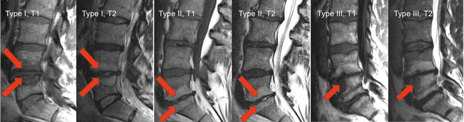

Adapted from: Dudli S, Fields AJ, Samartzis D, et al. Pathobiology of Modic changes. Eur Spine J. 2016 Nov;25(11):3723-3734. doi: 10.1007/s00586-016-4459-7.
1) Description of Measurement
Modic changes describe signal intensity alterations of vertebral body marrow adjacent to degenerated intervertebral discs, reflecting different stages of the degenerative cascade. They are strongly associated with disc degeneration, low-back pain, and segmental instability.
Three distinct patterns are recognized based on MRI signal characteristics.
2) Instructions to Measure
3) Normal vs. Pathologic Ranges
Key points:
4) Important References
Modic MT, Steinberg PM, Ross JS, et al. Degenerative disk disease: assessment of changes in vertebral body marrow with MR imaging. Radiology. 1988 Jan;166(1 Pt 1):193-9. doi: 10.1148/radiology.166.1.3336678.
Jensen TS, Karppinen J, Sorensen JS, et al. Vertebral endplate signal changes (Modic change): a systematic literature review of prevalence and association with non-specific low back pain. Eur Spine J. 2008 Nov;17(11):1407-22. doi: 10.1007/s00586-008-0770-2.
Hopayian K, Raslan E, Soliman S. The association of modic changes and chronic low back pain: A systematic review. J Orthop. 2022 Nov 17;35:99-106. doi: 10.1016/j.jor.2022.11.003.
5) Other info....
Modic changes often co-localize with Pfirrmann grade IV–V discs and reduced Disc-Height Index.
Type I lesions may respond differently to targeted therapies (e.g., anti-inflammatory strategies).
Report Modic changes in conjunction with: